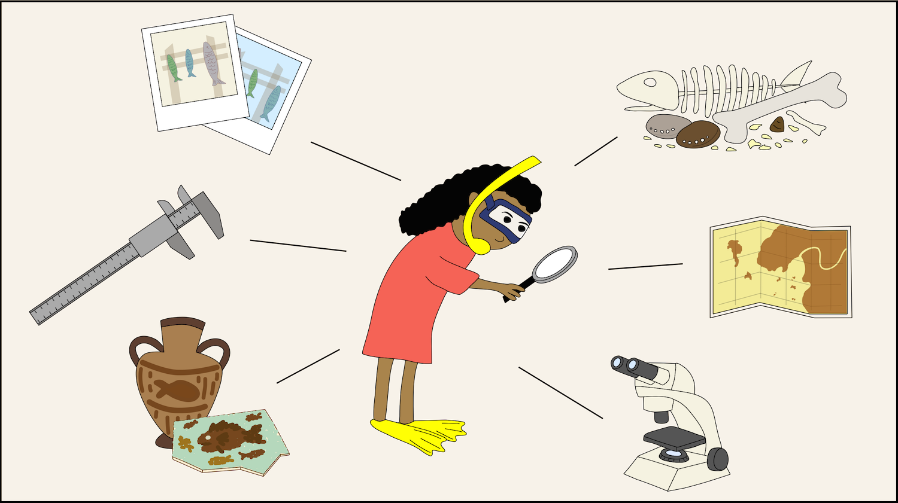
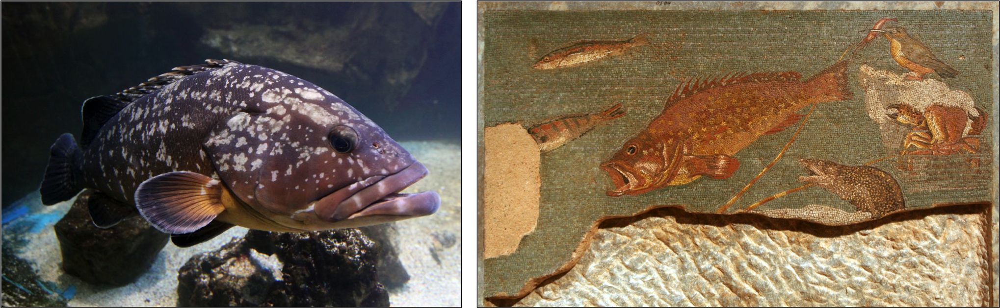
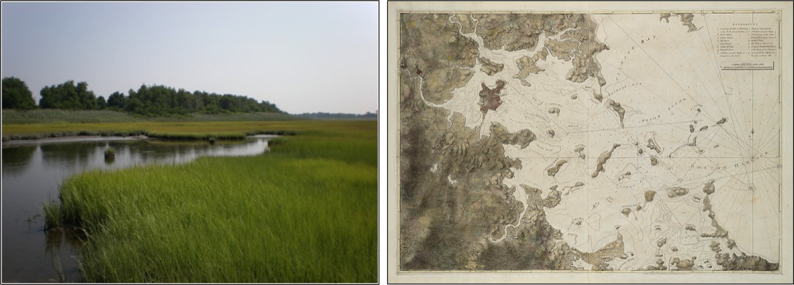
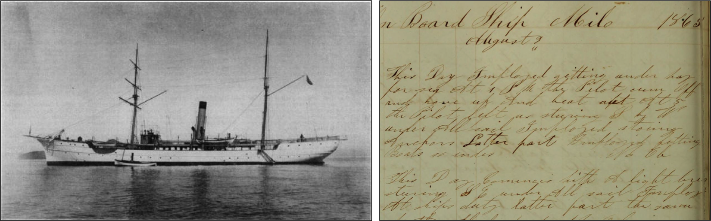

To understand the past and future of our oceans, marine biologists explore some unconventional sources of data.

Illustration by author
What do you think of when you picture a marine biologist at work? Perhaps a SCUBA diver counting animals underwater, or people leaning over the side of a boat to put tags on whales, or exploring the deep ocean using submarines. Or even a person bending over a microscope, trying to identify tiny plankton. Few people would picture someone sorting through the contents of ancient trash heaps, or comparing Roman mosaic artworks, or poring over old colonial maps. After all, those are jobs for archaeologists and historians. Marine biologists study ocean life, not human history, right?
Yet when we look at our coasts today, it is hard to imagine many marine ecosystems that remain untouched by people. People have lived, fished, and explored the oceans for a long, long time before marine biologists began counting, measuring, or tagging animals and plants. As I write this article, I am sitting in a 150-year-old building in the oldest marine research station on the U.S. West Coast. Stanford University's Hopkins Marine Station has an impressive scientific history, but is still really young compared to the 250-year-old city surrounding it. And Native American communities lived and fished here for thousands of years before the city was built. So if we really want to understand how marine ecosystems have changed over the course of centuries, we may have to look beyond the conventional methods that marine ecologists have used in the past few decades. By knowing what marine environments looked like in the past, we can better predict what they may look like in the future, and also and figure out how to restore ecosystems that have been degraded - goals that are more important than ever in an age of rapid global change.
With this in mind, marine scientists have begun to cross the traditional lines of academic disciplines and explore creative new ways of studying past marine ecosystems. In this article, I will explore some of the ways that marine scientists are combining conventional and unconventional sources of ecological data in their quest to understand our changing oceans.
People have lived and fished along the coasts of the Mediterrenean Sea for many millennia - long before anyone could even fathom that humans might have lasting impacts on the bountiful ocean. So of course, no one was keeping scientific records on the health of fish stocks, which makes it can be difficult to know the full extent of how Mediterrenean fisheries have changed.
Marine ecologists from the Hopkins Marine Station and the University of Salento thought there might be a way: they turned to ancient art as an inspiration. They studied over 70 different ancient Etruscan, Greek, and Roman mosaic artworks that feature the now-endangered dusky grouper, and observed that the fish were all portrayed as much larger than the ones caught in recent times. Furthermore, many of the mosaics depicted people catching the groupers using harpoons and poles, from boats at the water's surface. These fishing methods are no longer possible in modern times, because large dusky groupers are rarely found in shallow waters.

Left: A dusky grouper (CC-BY-SA-4.0), Right: A first-century Roman mosaic artwork (CC-PD)
Of course, you might expect that ancient artists aren't as reliable a data source as our precise modern ways of measuring fish. After all, we've all heard grandfathers' tales of the fish that get bigger with every retelling. But the scientists were able to verify their observations against information from other sources. Archaeologists have found large numbers of dusky grouper bones in the trash heaps of ancient Mediterrenean human settlements, which point to a great abundance of very big fish in ancient times. Furthermore, the ancient Romans Ovid and Pliny the Elder wrote about big groupers being fished in shallow waters.
These multiple diverse sources of information told the same story: over thousands of years of fishing, dusky groupers have become smaller and moved into deeper water, out of the reach of spearfishers. Since large fish like groupers play important top predator roles in the ecosystem, these changes may have caused cascading effects on other species in Mediterranean waters. But that wasn't all. The scientists then compared their findings with data collected using modern ecological methods. Surveys of fish in a Mediterrenean marine reserve showed that with long-term protection against fishing, dusky groupers started to grow bigger and move into shallower water. So the ecosystem changes brought about by centuries of fishing may be reversible, if we have the will to do so.
It's not just fisheries that have changed over time - coastal landscapes have also been transformed by human activity. For example, when colonists and settlers populated New England, they drained and ditched salt marshes on the coastline to create productive farmlands and to control mosquito populations. This happened long before people realized that salt marshes play important roles in providing nursery habitat for fish, protecting coastlines from storms and erosion, and storing carbon to buffer against climate change.
As we have started to understand the services that salt marsh ecosystems provide, there have been growing efforts to monitor, protect, and protect and restore salt marsh habitat. But it's hard to restore an ecosystem if you don't know what it used to look like. Satellite maps are often used in mapping landscape changes, but they only date back 75 years or less, and don't tell us about earlier marsh loss.

Left: A salt marsh (CC-BY-2.0). Right: A late-1700's map of the Boston Harbor (CC-BY-2.0).
To better calculate salt marsh habitat loss, a team of marine ecologists (who were more accustomed to measuring marsh grass growth and counting fiddler crabs) decided to search local libraries and archives for old maps of coastal towns and cities in New England. They found and digitized maps from Rhode Island, Massachusetts, New Hampshire, and Maine, that dated back to the late 1700s. By comparing these old maps with newer aerial photos and satellite maps, they were able to track over 200 years of coastal change.
Overall, the scientists found that plenty of salt marsh habitat had been lost over time - an average of 37%. But in the areas with active conservation and restoration efforts, they found that the total losses of habitat were much smaller, and some even showed a tiny gain in salt marsh habitat. Once again, "unconventional" data sources have provided not only a window into the past, but also a potential path forward.
By exploring less-conventional sources of data, marine scientists have learned a lot about our changing oceans. But these kinds of data can be challenging to collect. Not all maps and documents are easily digitized, and manually extracting useable information is really time-intensive.
For example, ship's logs are a valuable source of information on past weather and ocean conditions. Since the mid-19th century, U.S. Navy and Coast Guard ships, as well as whaling vessels, have made many voyages through Arctic waters. The logs from all these ships are a treasure trove of important historical information about the fastest-warming region of the planet. But using that data would take thousands of hours of reading through pages and pages of old, handwritten notes - hours that individual scientists just don't have.

Left: The USFCS Albatross in the 1890s. Logs from this ship contain valuable information on past weather and ocean conditions in the Arctic (CC BY-SA 2.0). Right: A page from a ship's log. (CC BY-SA 2.0)
Enter the citizen scientists! Since 2010, over 4,700 people have helped to transcribe 480,000 pages of ship's logs, extracting information that scientists can use to reconstruct past conditions and predict future change in the Arctic ocean. Crowd-sourcing is making important climate data accessible to researchers around the world (you can join these engaged citizens here!).
The rise of citizen scientists has opened the door for many more types of conventional and unconventional data to be used by scientists and for the public. Citizen scientists are helping to extract historical biodiversity data from museum records, map global and local changes in kelp forest habitats, identify plankton, monitor global shark, seahorse, manta ray populations, and track invasive species, just to name a few examples.
Conventional ecological data will always be central to our studies of ocean ecosystems - scientists spend lots of time and effort using rigorous scientific methods in order to produce the most reliable information possible. But in order to better understand our rapidly changing oceans, marine science has itself adapted and changed.
Marine biologists have started to think out of the box and combine ecological data with information from art, archaeology, maps, historical writings, and many other sources, in order to gain new insights into the past and future of our oceans. By partnering with engaged citizens, scientists have also expanded the world of available data about our past and present oceans. And in an age of global climate change, this integrative, inclusive way of doing science is becoming more important than ever before.
{kind=link}
{kind=link}
{kind=link}